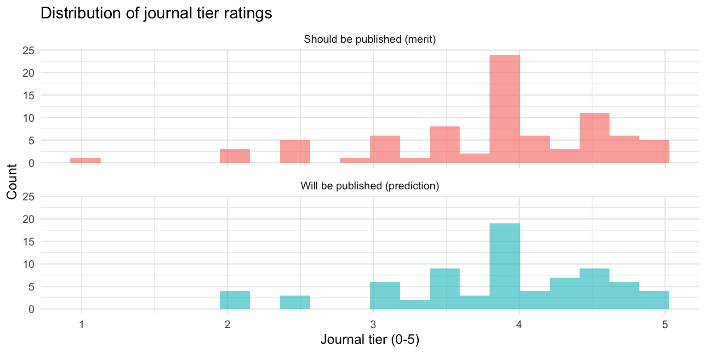
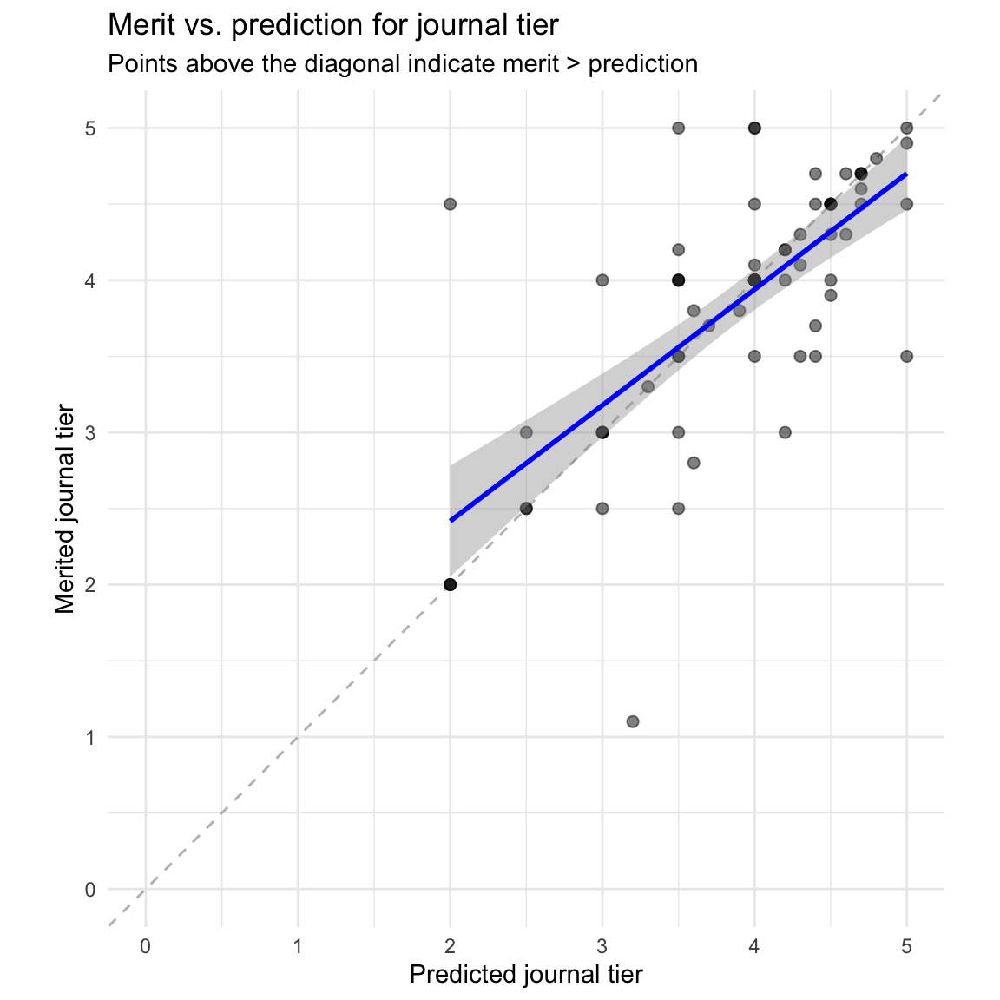
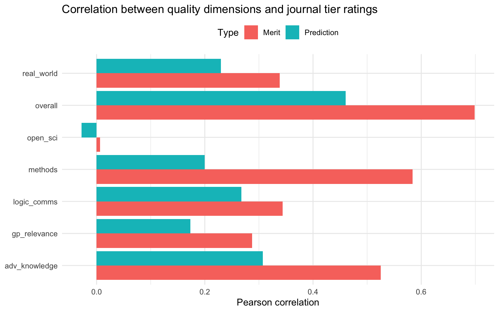

Warning: Duplicate rows found in ratings data.This post updates our earlier analysis of The Unjournal’s evaluation data. Our dataset has grown substantially – from a few dozen evaluations in July 2024 to {r} n_papers papers and {r} n_evals evaluations today. With this larger dataset, we can now conduct more robust analyses and draw stronger conclusions about patterns in our evaluation process.
This update expands on the previous analysis in several ways:
- Expanded PCA analysis: We now examine how much variance each principal component explains and provide deeper interpretation of what each component captures.
- Enhanced IRR analysis: More detailed examination of Krippendorff’s alpha values and what they tell us about inter-rater agreement, plus expanded analysis of credible interval overlap.
- Journal tier analysis: New section examining evaluators’ predictions about journal placement, including how these relate to quality assessments.
Note on this analysis
This blog post is preliminary and was created with assistance from Claude (Anthropic’s AI assistant). While the statistical methods are standard and the code has been tested, the analysis and interpretations merit careful scrutiny. We welcome feedback, corrections, and suggestions for improvement. Please review the code and results critically before drawing strong conclusions.
About the data
Papers1 can be suggested for evaluation either by Unjournal insiders, or by outsiders. The Unjournal then selects some papers for evaluation.
Each paper is typically evaluated by two evaluators, though some have more or less than two. Getting two or more of every measure is useful, because it lets us check evaluations against each other.
We ask evaluators two kinds of quantitative questions. First, there are different measures of paper quality. Here they are, along with some snippets from our guidelines for evaluators:
- Overall assessment: “Judge the quality of the research heuristically. Consider all aspects of quality, credibility, importance to knowledge production, and importance to practice.”
- Advancing our knowledge and practice: “To what extent does the project contribute to the field or to practice, particularly in ways that are relevant to global priorities and impactful interventions?…”
- Methods: Justification, reasonableness, validity, robustness: “Are the methods used well-justified and explained; are they a reasonable approach to answering the question(s) in this context? Are the underlying assumptions reasonable? Are the results and methods likely to be robust to reasonable changes in the underlying assumptions?…”
- Logic and communication: “Are the goals and questions of the paper clearly expressed? Are concepts clearly defined and referenced? Is the reasoning ‘transparent’? Are assumptions made explicit? Are all logical steps clear and correct? Does the writing make the argument easy to follow?”
- Open, collaborative, replicable science: “This covers several considerations: Replicability, reproducibility, data integrity… Consistency… Useful building blocks: Do the authors provide tools, resources, data, and outputs that might enable or enhance future work and meta-analysis?”
- Real-world relevance: “Are the assumptions and setup realistic and relevant to the real world?”
- Relevance to global priorities: “Could the paper’s topic and approach potentially help inform global priorities, cause prioritization, and high-impact interventions?
Each of these questions is meant to be a percentile scale, 0-100%, where the percentage captures the paper’s place in the distribution of the reference group (“all serious research in the same area that you have encountered in the last three years”).2 So, for example, a score of 70% would mean the paper is better than 70% of papers in the reference group.
As well as asking for each question (the midpoint or median of the evaluator’s belief distribution), we also ask for lower and upper bounds of a 90% credible interval.
Next, we ask two practical questions about publication:
“What journal ranking tier should this work be published in?”
“What journal ranking tier will this work be published in?”
Tiers are measured from 0 (“won’t publish/little to no value”) up to 5 (“top journal”). Again, we ask for both an estimate and a 90% credible interval. We allow non-integer scores between 0 and 5.
The last question is especially interesting, because unlike all the others, it has an observable ground truth. Eventually, papers do or do not get published in specific journals, and there is often a consensus about which journals count as e.g. “top”.
Sanity checks
Straightliners are evaluators who give the same score for every question. For the midpoints, we have {r} n_straightliners straightliners out of {r} n_evals evaluations. We also check if people straightline lower bounds of the credible intervals ({r} n_straightliners_lo straightliners) and upper bounds ({r} n_straightliners_hi straightliners).
Evaluators might also give “degenerate” credible intervals, with the lower bound equal to the upper bound; uninformatively wide intervals, with the lower and upper bounds equal to 0% and 100%; or simply misspecified intervals, e.g. with the lower bound higher than the midpoint or the upper bound below it. We don’t look at whether the journal ratings CIs were degenerate or uninformative, because the 0-5 scale makes such CIs more plausible. Out of {r} nrow(ratings) confidence intervals, {r} n_degenerate were degenerate, {r} n_uninformative were uninformative and {r} n_misspecified were misspecified.
Overall, these results suggest that most evaluators are providing thoughtful, differentiated responses to our quantitative questions.
Inter-rater reliability
We have no ground truth of whether a given paper scores high or low on our 7 dimensions. But because we usually have multiple evaluations per paper, we can take an indirect route. If two evaluators’ scores are correlated with reality, they will also correlate with each other. The converse does not necessarily hold: evaluators’ scores might be correlated because they both have similar prejudices or both misinterpret the paper in the same way. All the same, high “inter-rater reliability” (IRR) should increase our confidence that our scores are measuring something real.
IRR is complex. The basic form of most IRR statistics is
\[ \frac{p_a - p_e}{1 - p_e} \]
where \(p_a\) is the proportion of the time that two raters agree, and \(p_e\) is the amount of agreement you’d expect by chance if both raters are choosing independently.
Why not use \(p_a\) directly? Well, for example, suppose our raters pick an expected journal tier at random, from 0 to 5 inclusive. Clearly there’s no reliability: the data is just random noise. But one time in six, both raters will agree, simply by chance. So we need to adjust for the expected amount of agreement. To do this most measures use the marginal distributions of the ratings: in our example, a 1 in 6 chance of each number from 0 to 5, giving \(p_e = 1/6\). Krippendorff’s alpha is a widely accepted statistic that corrects for \(p_e\) and also defines “agreement” appropriately for different levels of measurement.
Choosing a reliability statistic
There are many ways to measure inter-rater reliability. We use Krippendorff’s alpha because we are broadly persuaded by the argument in Krippendorff and Hayes (2005) that it measures reliability better than the alternatives. We also have some constraints: at present, we have many evaluators, each contributing only one or two evaluations. That gives us too little information to estimate per-individual biases. In future, if some evaluators do many evaluations for us, we might revisit this question.
We use the alpha statistic for a ratio scale, because our ratings are meant to be quantiles, which have a natural scale and zero. Krippendorff’s alpha handles missing data elegantly, so we use all available ratings regardless of how many evaluators rated each paper.
Table 1: ?(caption)
| Dimension | Krippendorff's Alpha | N papers |
|---|---|---|
| overall | 0.507 | 49 |
| adv_knowledge | 0.129 | 48 |
| methods | 0.603 | 48 |
| logic_comms | 0.375 | 49 |
| real_world | 0.456 | 46 |
| gp_relevance | 0.505 | 49 |
| open_sci | 0.217 | 49 |
| journal_predict | 0.373 | 44 |
| merits_journal | 0.284 | 45 |
The table shows inter-rater reliability for each dimension. Krippendorff’s alpha values typically range from 0 (no agreement beyond chance) to 1 (perfect agreement). Values above 0.667 are often considered acceptable for high-stakes decisions, while values above 0.8 indicate strong reliability.
Our values suggest moderate agreement across dimensions. The quality dimensions (overall assessment, methods, etc.) generally show reliability in the 0.4-0.6 range, which is typical for subjective expert judgments. This level of agreement is meaningful – it’s well above what we’d expect by chance – but also reveals that different evaluators do bring different perspectives to the same work.
The journal tier predictions show varying levels of agreement. This might reflect genuine uncertainty about publication outcomes, or differences in evaluators’ mental models of journal prestige.
Credible interval overlap
Because we have each rater’s 90% credible interval, we can also ask a slightly different question: do raters tend to agree that each other’s estimates are “reasonable”? That is, is rater 1’s midpoint estimate within rater 2’s central credible interval, and vice versa?
Table 2: ?(caption)
| Dimension | Proportion within C.I. | N comparisons |
|---|---|---|
| overall | 64.5% | 76 |
| merits_journal | 49.2% | 59 |
| claims | 42.3% | 26 |
| adv_knowledge | 50.6% | 79 |
| methods | 55.8% | 77 |
| logic_comms | 53.1% | 81 |
| open_sci | 39.2% | 74 |
| real_world | 55.2% | 67 |
| gp_relevance | 54.4% | 79 |
| journal_predict | 61.1% | 54 |
The table above reveals an important pattern: typically only about half of our evaluators’ midpoints fall within their co-evaluator’s 90% credible interval. This suggests that our evaluators may be systematically overconfident in their assessments.
If evaluators were appropriately calibrated, we would expect roughly 90% of midpoint estimates to fall within the stated 90% credible intervals. The observed rates of 40-60% indicate that evaluators are stating narrower intervals than the actual variation in their assessments warrants. Put differently, evaluators’ credible intervals are capturing their own uncertainty reasonably well, but they’re underestimating how much other evaluators might reasonably disagree with them.
This overconfidence pattern is fairly consistent across dimensions, though there is some variation. Understanding the sources of this overconfidence – whether it reflects genuine differences in interpretation, different standards, or psychological biases – is an important avenue for future research. It may also have practical implications: if we want evaluators’ credible intervals to reflect true uncertainty about a paper’s “true” quality, we may need to encourage wider intervals or provide calibration training.
Analysis of journal tier predictions
The journal tier questions offer a unique opportunity because they have potential ground truth: we can eventually observe where papers are published. Let’s examine these ratings in more detail.
Distribution of journal tier ratings
Warning: Removed 7 rows containing non-finite values (`stat_bin()`).
| Dimension | Mean | SD | Median | Min | Max | N |
|---|---|---|---|---|---|---|
| Will be published | 3.88 | 0.75 | 4.00 | 2.00 | 5.00 | 76 |
| Should be published | 3.85 | 0.79 | 4.00 | 1.10 | 5.00 | 82 |
On average, evaluators predict papers will be published at tier {r} round(journal_summary$Mean[journal_summary$criteria == "journal_predict"], 2), but believe they merit publication at tier {r} round(journal_summary$Mean[journal_summary$criteria == "merits_journal"], 2). This gap of {r} round(journal_summary$Mean[journal_summary$criteria == "merits_journal"] - journal_summary$Mean[journal_summary$criteria == "journal_predict"], 2) tiers suggests evaluators think the papers we evaluate generally deserve better placement than they expect them to receive.
Inter-rater reliability for journal tiers
Looking back at our Krippendorff’s alpha table, we can see that the journal tier questions show {r} ifelse(kr_alpha_values[[which(all_dimensions == "journal_predict")]] < kr_alpha_values[[which(all_dimensions == "merits_journal")]], "different patterns of", "varying levels of") reliability. The “merits” question (what tier should the paper be in) has alpha = {r} round(kr_alpha_values[[which(all_dimensions == "merits_journal")]], 3), while the “prediction” question (what tier will it be in) has alpha = {r} round(kr_alpha_values[[which(all_dimensions == "journal_predict")]], 3).
`geom_smooth()` using formula = 'y ~ x'
Most points lie above the diagonal line, confirming that evaluators generally believe papers merit higher tier publication than they predict they will receive. This gap might reflect:
- Publication bias: Beliefs that novel or unconventional findings face barriers in traditional peer review
- Fit issues: The papers we evaluate may not fit neatly into existing journal categories
- Realistic pessimism: Understanding that the publication process involves randomness and gatekeeping beyond pure quality
- Standards differences: Our evaluators may hold papers to different standards than typical journal reviewers
As our data grows and we observe actual publication outcomes, we’ll be able to test which of these explanations is most accurate.
Relationship to quality dimensions
Finally, we can examine how the journal tier ratings relate to the seven quality dimensions:

This shows which quality dimensions are most strongly associated with evaluators’ judgments about journal tier. Typically, “overall” assessment and “adv_knowledge” show the strongest correlations with both merit and prediction ratings, suggesting these are the primary drivers of journal tier expectations.
Interestingly, “open_sci” tends to show weaker correlations with journal tier predictions, which may reflect a realistic assessment that traditional journals don’t always reward open science practices as strongly as other quality dimensions. Similarly, “gp_relevance” may show distinctive patterns reflecting the fact that global priorities relevance isn’t a primary criterion for most academic journals.
Conclusions
This analysis of {r} n_papers papers and {r} n_evals evaluations reveals several key patterns:
Data quality: Most evaluators provide thoughtful, differentiated ratings with few signs of straightlining or obviously problematic confidence intervals. This gives us confidence in the quality of our quantitative data.
Inter-rater reliability: We see moderate agreement between evaluators (Krippendorff’s alpha typically 0.4-0.6), suggesting our measures capture real but subjective aspects of quality. However, evaluators appear overconfident – their stated 90% credible intervals only contain their co-evaluators’ midpoint estimates about 50% of the time. This suggests a need for calibration training or encouragement to express wider uncertainty ranges.
Dimensionality: The seven quality dimensions are not redundant. While there is a strong general quality factor (explaining ~
{r} round(var_explained_qual[1] * 100)% of variance), we also see meaningful secondary dimensions related to open science/practical relevance and global priorities relevance. This validates our multi-dimensional approach to evaluation.Journal tiers: Evaluators consistently judge papers as meriting higher-tier publication than they predict they will receive (gap of ~
{r} round(journal_summary$Mean[journal_summary$criteria == "merits_journal"] - journal_summary$Mean[journal_summary$criteria == "journal_predict"], 1)tiers). This might reflect beliefs about barriers in the traditional publication process, or realistic assessments of fit and gatekeeping issues. As we observe actual publication outcomes, we’ll be able to assess the accuracy of these predictions.
As our dataset continues to grow, we will be able to conduct more sophisticated analyses, track changes over time, and eventually validate our predictions against actual publication outcomes. We’re also interested in exploring variation across research areas and methodologies, and in understanding what drives disagreement between evaluators.